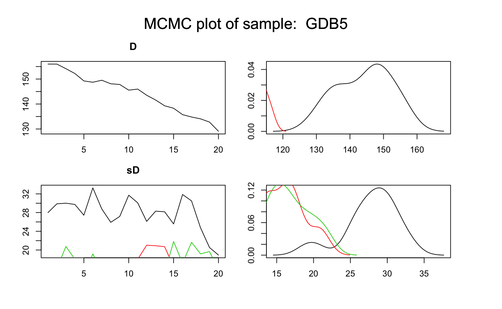

Palaeodose_Computation.RdThis function computes the palaeodose (in Gy) of one or various samples according to the model developed in Combes et al (2015),
based on an output of Generate_DataFile or Generate_DataFile_MG
or both of them using combine_DataFiles.
Samples, for which data is avalilable in several BIN files, can be analysed.
Single-grain or Multi-grain OSL measurements can be analysed simultaneouly.
Palaeodose_Computation(DATA, SampleNames, Nb_sample, BinPerSample = rep(1, Nb_sample), SavePdf = FALSE, OutputFileName = c("MCMCplot"), OutputFilePath = c(""), SaveEstimates = FALSE, OutputTableName = c("DATA"), OutputTablePath = c(""), LIN_fit = TRUE, Origin_fit = FALSE, distribution = c("cauchy"), Iter = 50000, t = 5, n.chains = 3)
| DATA | list of objects: LT, sLT, ITimes, dLab, ddot_env, regDose, J, K, Nb_measurement,
provided by |
|---|---|
| SampleNames | character vector: names of sample. The length of this vector is equal to |
| Nb_sample | integer: number of samples. |
| BinPerSample | integer vector (with default): vector with the number of BIN files per sample.
The length of this vector is equal to |
| SavePdf | boolean (with default): if TRUE save graph in pdf file named |
| OutputFileName | character (with default): name of the pdf files that will be generated by the function. |
| OutputFilePath | character (with default): path to the pdf files that will be generated by the function. |
| SaveEstimates | boolean (with default): if TRUE save Bayes estimates and credible interval at level 68
in a csv table named |
| OutputTableName | character (with default): name of the table that will be generated by the function if |
| OutputTablePath | character (with default): path to the table that will be generated by the function if |
| LIN_fit | logical (with default): if TRUE (default) allows a linear component, on top of the (default) saturating exponential curve, for the fitting of dose response curves. Please see details for more informations on the proposed dose response curves. |
| Origin_fit | logical (with default): if TRUE, forces the dose response curves to pass through the origin. Please see details for more informations on the proposed growth curves. |
| distribution | character (with default): type of distribution that defines how individual equivalent dose values are distributed around the palaeodose. Allowed inputs are "cauchy", "gaussian", "lognormal_A" and "lognormal_M". |
| Iter | integer (with default): number of iterations for the MCMC computation (for more information see |
| t | integer (with default): 1 every |
| n.chains | integer (with default): number of independent chains for the model (for more information see |
NUMERICAL OUTPUT
A list containing the following objects:
Sampling that corresponds to a sample of the posterior distributions of palaeodose and equivalent dose dispersion parameters (both in Gy).
Model_GrowthCurve, stating which dose response fitting option was chosen;
Distribution, stating which distribution was chosen to model the dispersion of individual equivalent dose values around the palaeodose of the sample.
The Gelman and Rubin test of convergency: prints the result of the Gelman and Rubin test of convergency for palaeodose and equivalent dose dispersion parameters for each sample.
A result close to one is expected.
In addition, the user must visually assess the convergency of the trajectories by looking at the pdf file
generated by the function (see PLOT OUTPUT for more informations).
If both convergencies (Gelman and Rubin test and plot checking) are satisfactory,
the user can consider the printed estimates as valid. Otherwise, the user may try increasing the number of MCMC interations
(Iter) to reach convergency.
Credible intervals and Bayes estimates: prints the Bayes esitmates, the credible intervals at 95% and 68% for the palaeodose and equivalent dose dispersion parameters for each sample.
PLOT OUTPUT
MCMC trajectories
A graph with the MCMC trajectories and posterior distributions of the palaeodose and equivalent dose dispersion parameters
is displayed, there is one page per sample.
The first line of the figure correponds to the palaeodose parameter and the second to the equivalent dose dispersion parameter.
On each line, the plot on the left represents the MCMC trajectories, and the one on the right the posterior distribution of the parameter.
Summary of palaeodose estimates: plot credible intervals and Bayes estimate of each sample palaeodose on a same graph.
To give result in a publication, we recommend to give the Bayes estimate of the parameters as well as the credible interval at 95% or 68%.
** Option on growth curves **
As for Age_Computation and AgeS_Computation, the user can choose from 4 dose response curves:
Saturating exponential plus linear growth (PalaeodosesMultiBF_EXPLIN):
for all x in IR+, f(x)=a(1-exp(-x/b))+cx+d; select
LIN_fit=TRUE
Origin_fit=FALSE
Saturating exponential growth (PalaeodosesMultiBF_EXP):
for all x in IR+, f(x)=a(1-exp(-x/b))+d; select
LIN_fit=FALSE
Origin_fit=FALSE
Saturating exponential plus linear growth and fitting through the origin (PalaeodosesMultiBF_EXPLINZO):
for all x in IR+, f(x)=a(1-exp(-x/b))+cx; select
LIN_fit=TRUE
Origin_fit=TRUE
Saturating exponential growth and fitting through the origin (PalaeodosesMultiBF_EXPZO):
for all x in IR+, f(x)=a(1-exp(-x/b)); select
LIN_fit=FALSE
Origin_fit=TRUE
** Option on equivalent dose distribution around the palaeodose **
The use can choose between :
cauchy: a Cauchy distribution with location parameter equal to the palaeodose of the sample
gaussian: a Gaussian distribution with mean equal to the palaeodose of the sample
lognormal_A: a log-normal distribution with mean or Average equal to the palaeodose of the sample
lognormal_M: a log-normal distribution with Median equal to the palaeodose of the sample
Please note that the initial values for all MCMC are currently all the same for all chains since we rely on the automatic initial value generation of JAGS. This is not optimal and will be changed in future. However, it does not affect the quality of the age estimates if the chains have converged.
Combes, B., Philippe, A., Lanos, P., Mercier, N., Tribolo, C., Guerin, G., Guibert, P., Lahaye, C., 2015. A Bayesian central equivalent dose model for optically stimulated luminescence dating. Quaternary Geochronology 28, 62-70. doi:10.1016/j.quageo.2015.04.001
Generate_DataFile, Generate_DataFile_MG, combine_DataFiles,
rjags, plot_MCMC,
Age_Computation, AgeS_Computation
## Load data data(DATA1,envir = environment()) ## Palaeodose computation of samples GDB3 P=Palaeodose_Computation(DATA=DATA1,Nb_sample=1,SampleNames=c("GDB5"),Iter=100)#> Compiling model graph #> Resolving undeclared variables #> Allocating nodes #> Graph information: #> Observed stochastic nodes: 505 #> Unobserved stochastic nodes: 608 #> Total graph size: 7216 #> #> Initializing model #>#> Warning: [plot_MCMC()] 'n.iter' out of range, reset to number of observations#> #> #> >> Results of the Gelman and Rubin criterion of convergence << #> ---------------------------------------------- #> Sample name: GDB5 #> --------------------- #> Point estimate Uppers confidence interval #> D_GDB5 3.57 11.94 #> sD_GDB5 2.83 5.45 #> #> #> --------------------------------------------------------------------------------------------------- #> *** WARNING: The following information are only valid if the MCMC chains have converged *** #> --------------------------------------------------------------------------------------------------- #> #> #> #> >> Bayes estimates of Age, Palaeodose and its dispersion for each sample and credible interval << #> ---------------------------------------------- #> Sample name: GDB5 #> --------------------- #> Parameter Bayes estimate Credible interval #> D_GDB5 109.882 #> lower bound upper bound #> at level 95% 98.7 132.65 #> at level 68% 98.7 109.94 #> #> Parameter Bayes estimate Credible interval #> sD_GDB5 18.369 #> lower bound upper bound #> at level 95% 11.43 25.61 #> at level 68% 14.53 23.94 #> #> ----------------------------------------------